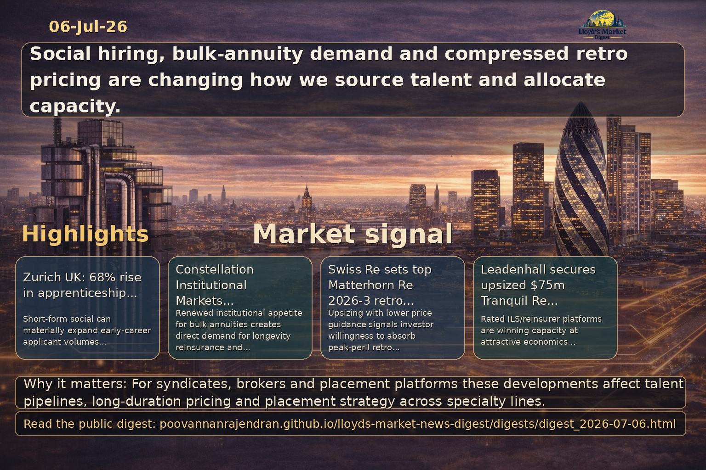

Executive summary
Zurich UK’s reported 68% increase in apprenticeship applications via social media (from 2,225 to 3,745) signals a material shift in how entry-level talent is sourced. For Lloyd’s market participants — syndicates, global specialty brokers and placement platforms — this underscores an opportunity to rebuild pipelines, accelerate digital employer branding and improve diversity metrics by engaging candidates where they consume content. Strategic adoption of short-form social content, aligned…
View LinkedIn Visual Summary

Generated from the same day's LinkedIn digest text.
Key themes
- Digital recruitment and employer branding
- Early-career talent pipeline for specialty insurance
- Diversity and social mobility impact
- Broker and syndicate workforce strategy
- Measurement and governance of social-sourced hires
- Longevity and pension risk transfer opportunity for specialty reinsurers
Source: insurancetimes.co.uk
Why it matters: The Zurich example provides direct evidence that short-form social media can dramatically expand volumes of early-career applicants — a strategic lever that Lloyd’s syndicates, global specialty brokers and placement platforms can exploit to address skill shortages, improve social mobility and refresh ageing workforces in specialist lines.
- Strategic implication: Syndicates and brokers should treat social channels as primary sourcing routes for apprenticeships and early-career roles, incorporating short-form content into employer-brand strategies to access broader and more diverse talent pools.
- Operational action: Develop coordinated content pipelines (employee-led content, realistic job previews, role shadowing clips) and link social campaigns to structured apprenticeship/rotation programmes and placement-platform integrations to convert interest into qualified candidates.
- Risk and measurement: Establish governance and KPIs (quality of hire, conversion rates, retention at 12–36 months, diversity metrics) to avoid volume without quality; ensure compliance, role-specific screening and training capacity to onboard higher applicant volumes effectively.
Source: reinsurancene.ws
Why it matters: Constellation's PRT re-entry expands institutional demand for bulk annuities and creates direct lines into longevity and balance-sheet risk transfer that are addressable by specialty reinsurers, Lloyd's syndicates, and brokers. This development affects capacity allocation, pricing for long-duration liabilities, and the need for placement and data infrastructure to execute institutional transactions efficiently.
- Opportunity for Lloyd's syndicates and specialty reinsurers to offer bespoke longevity reinsurance and retrocession structures to support bulk annuity writers, subject to robust actuarial stress-testing and capital planning.
- Brokers and placement platforms should prioritise workflows and integrations (data exchange, valuation models, virtual placement) to capture institutional annuity deals and to facilitate multi-carrier placements efficiently.
- Risk and execution considerations: long-tailed liability modeling, counterparty credit, and capital lock-up require enhanced due diligence, conservative reserving assumptions, and explicit exit/retrocession strategies.
Source: reinsurancene.ws
Why it matters: Gallagher Re's appointment to lead the Dubai facultative team signals intensified broker-led facilitation of facultative placements in the Middle East. This strengthens distribution channels into DIFC and creates additional conduits for Lloyd's syndicates and global specialty carriers to access regional specialty risks, particularly energy, marine and large casualty lines.
- For Lloyd's and syndicates: leverage enhanced broker presence to expand facultative placements regionally through targeted underwriting appetite statements, faster quotes, and DIFC-market engagement frameworks.
- Placement platforms and broking houses should invest in regional digital facultative workflows, local underwriting desks, and interoperability with London market placement systems to reduce friction and accelerate deal turnarounds.
- Operational risk and relationship management: track talent concentration and secure formal panel arrangements, SLAs and co-broking agreements to protect access and ensure continuity of cover and information flows.
Source: artemis.bm
Why it matters: Swiss Re’s decision to upsiz e Matterhorn Re 2026-3 while lowering price guidance twice signals persistent demand for retrocession from major reinsurers and continued investor appetite despite compressed yields. This move has direct implications for Lloyd’s syndicates and global specialty carriers that rely on retro support to manage peak peril accumulations — pricing dynamics will influence retention strategies, collateral terms and broker negotiation leverage.
- Market signal: Lower price guidance despite upsizing shows capital markets remain willing to absorb large peak-peril exposures; syndicates should reassess retro pricing assumptions and capital-efficient attachments.
- Broker action: Brokers must emphasize execution certainty and tranche structuring to capture scarce investor capacity and preserve cedant economics when spreads compress.
- Portfolio management: Retro price compression increases temptation to transfer risk; managing agencies should stress-test accumulation models and consider retention adjustments or alternative non-traditional covers to protect underwriting margins.
Source: artemis.bm
Why it matters: Leadenhall’s placement of an upsized $75m Tranquil Re transaction for Nectaris Re priced at the low end of guidance highlights the potency of ILS managers and rated reinsurance platforms to access retro capacity at favorable economics. For Lloyd’s-focused brokers and syndicates, this demonstrates intensified competition from rated platforms and the need to differentiate through terms, collateral profiles and placement speed.
- Platform competition: Rated reinsurance platforms backed by established ILS managers are securing capacity and favorable pricing; Lloyd’s managers should evaluate partnerships with ILS sponsors or develop differentiated treaty features.
- Placement strategy: Low-end pricing pressures underline the importance of bespoke structuring (attachments, reinstatements, triggers) and fast placement platforms to optimize net cost of protection for cedants.
- Syndicate response: Syndicates must balance near-term relief from cheaper retro with longer-term margin impacts; consider enhancing underwriting defensibility and selectively retaining risk where capital returns are superior.